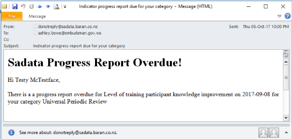

2.2 How to: Report (add data)
Adding progress reports is critical to the success of using this tool. Progress reports contain the data required for each indicator of the National Implementation Plan. This regular entry of data allows States, civil society and other stakeholders to check progress of the Plan and ensures that required reporting is just a matter of analysing the data and writing the narrative.
Data can be entered through progress reports by civil servants, administrators of the database or civil society and other stakeholders.
Reporting as an Indicator Owner
Each indicator in the Implementation Plan is assigned to an Indicator Manager who is responsible for uploading the relevant information, either as a once off or on a regular basis. That Indicator Manager will receive an automated email when the information is due.

Once an email reminder hass been received the Indicator Manager simply needs to:
-
Click on the link in the email (not pictured)
-
Enter login details (if not already signed in)
-
Filter the indicators using the 'My Indicators' option and click on the relevant indicator
-
Click on 'Add Report' (1 or 2 in screenshot below)

The Indicator Manager will then be taken to the following screen:

The Indicator Manager simply needs to fill out the required fields:
-
Title: The title of the progress report (E.g. 'Domestic violence stats Q3 2017' or 'NHRI CEDAW Training Workshop for Police Recruits'
-
Description: Full details of the progress report
-
Upload document: Information/data related to the indicator should be uploaded via this link
-
Public/Private: The status of the uploaded document can be set to public or private depending on whether there is sensitive information contained within that should not be available publicly
-
Draft/public: The status of the progress report. Once it is ready to publish on the public site, this status should be immediately changed to public.
-
Due date: As an administrator, both scheduled and unscheduled progress reports can be entered. The Administrator is required to indicate here whether the progress report they are uploading is unscheduled or scheduled.
-
Save/cancel: This is where the Administrator can save all of the details that have been entered, or clear the form using the cancel button
Reporting as a Contributor (Civil Society and Individuals)
Anyone is able to submit information via the application if they think it is relevant to a particular area of human rights or the SDGs. To do so you must first register as a user. Details on how to do so can be found here.
Secondly, and once logged in, you must navigate to the relevant indicator using the search or filtering functions. More details on using those functions can be found here.
Once the relevant indicator has been found the contributor simply needs to click on the 'Add report' button' as described above for Indicator Managers and follow the same set of instructions.
Reports submitted in this way will not automatically appear on the site. They will first be reviewed by a Manager and once approved will appear
Reviewing Reports as a Manager
Once a report is submitted by a Contributor the registered user the relevant Manager will receive an automated email informing them. The email notification will contain a link to the report - once the Manager has signed in they will be taken to the report to review the contents. To accept the contents of the report and make it public the Manager should change the status from 'draft' to 'public'.
Reporting as an Administrator
An Administrator can also choose to submit reports at any time and in relation to any indicator. To do so, simply follow the instructions for reporting as a contributor (above). Reports submitted by Administrators can be made immediately public by changing the drop down menu from 'draft' to 'public' when submitting the report.
Setting Up Indicator Managers
Setting up an Indicator Owner means assigning responsibility for a particular indicator to a registered user. That user will then be receive the automated report reminder emails and be responsible for uploading the report and data. This can only be done by Managers and Administrators.
For an Indicator Manager to be assigned, the person in question must first be a registered user. If they are not the Administrator must contact them and request they register. Details on how to register can be found here. Once the person is a registered user the process is as follows:
-
The registered user role must be changed from 'no role assigned' to 'contributor'. To do so the Administrator needs to navigate to the 'Users' page and update their role. Full details on how to do so can be found here.
-
The Administrator must then find the indicator they wish to assign to the registered user. The quickest way to do this is via the 'Indicators' tab in the top menu bar and using the search and filter functions. Clicking on the indicator will allow the Administrator to choose to edit the indicator and once editing they can assign it to the desired registered user using the drop down menu and recording when reports should be uploaded. Full details on adding and editing indicators can be found here.